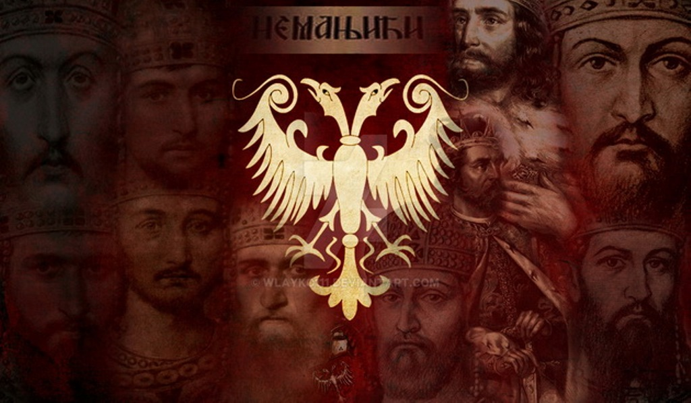

Немањићи су средњовековна српска династија која је владала Србијом више од два века и остварила највеће проширење средњовековне Србије. Династија је названа по Стефану Немањи I, оснивачу династије који је повезан са Вукановићима по мушкој линији и са Војислављевићима по женској линији. У династији има једанаест владара, с тим што се династија можда наставила, женском линијом у династију Лазаревића. Како су Лазаревићи родбински повезани са династијом Бранковића, који су владали делом Срба до прве половине шеснаестог века постоји могућност да су по женској линији и ти Бранковићи били потомци Немањића.

Србија за време Немањића
Српска држава у средњем веку је свој врхунац доживела под владавином Немањића. Краљевина Србија је проглашена 1217. године, а аутокефална српска архиепископија је проглашена 1219. године. Исте године је Сава Немањић објавио Номоканон Светог Саве. Стефан Душан се крунисао за цара 1346. године. Током Душанове владавине, Србија је постигла свој територијални, политички и привредни развој. Душан је донео Душанов законик, отворио нове трговачке путеве и ојачао привреду државе. Стефан Душан је покушао да са папом Иноћентијем IV и Млетачком републиком организује крсташки рат против Турака, али је умро децембра 1355. Наследио га син Урош Нејаки, за време чије владавине царство је упало у анархију. Овај период је обележио и успон нове претње у виду Османског царства, које се ширило из Азије у Европу.
Грб
Представљен је двоглавим белим орлом на црвеном пољу, који је преузет од византијског грба династије Палеолога. Двоглави орао је усвојен из византијске културе и убрзо је постао симбол српских краљева као и српске државе. Може се видети на каталонској мапи из 1339. где је престоница цара Душана означена двоглавим орлом, а тај исти симбол се налази и у манастиру Љевишка. Челенка је била омиљени део грба српске властеле и врло је присутна на новцу из тог периода, употребљавала се као грб, без штита.
Стефан- заједничко владарско име Немањића
Оснивач династије јавља се у писаним изворима као Стефан Немања. Име Немања било је његово лично име, а име Стефан, које је настало од грчког Стефанос, тј. „онај који је крунисан, који је овенчан”, изгледа је употребљено управо у том значењу. Сви његови наследници који су владали или су били одређени за наследнике престола такође се јављају и са именом Стефан, тј. овенчани владар. Поред владарског имена Стефан они су имали и лично име. Зато се сви наследници Стефана Немање I у једнакој мери могу назвати Стефан Немањић. Немањићи се у писаним изворима (повељама) у правилу јављају потписани само са заједничким владарски именом Стефан, а њихова лична имена која су добили по рођењу ређе су записивана. Према писању Светог Саве у Студеничком типику, његов средњи брат који је, вероватно 1196. године, наследио оца на великожупанском престолу, звао се као и њихов отац Стефан Немања. Савин средњи брат се код већине историчара данас јавља само под заједничким именом Стефан Немањић, или као Стефан Првовенчани, а знатно ређе његовим личним именом Стефан Немања II. Утицај наслеђа Немањића био је такав да су владрско име Стефан користили и краљ Твртко I, као и каснији Котроманићи.

.jpg)